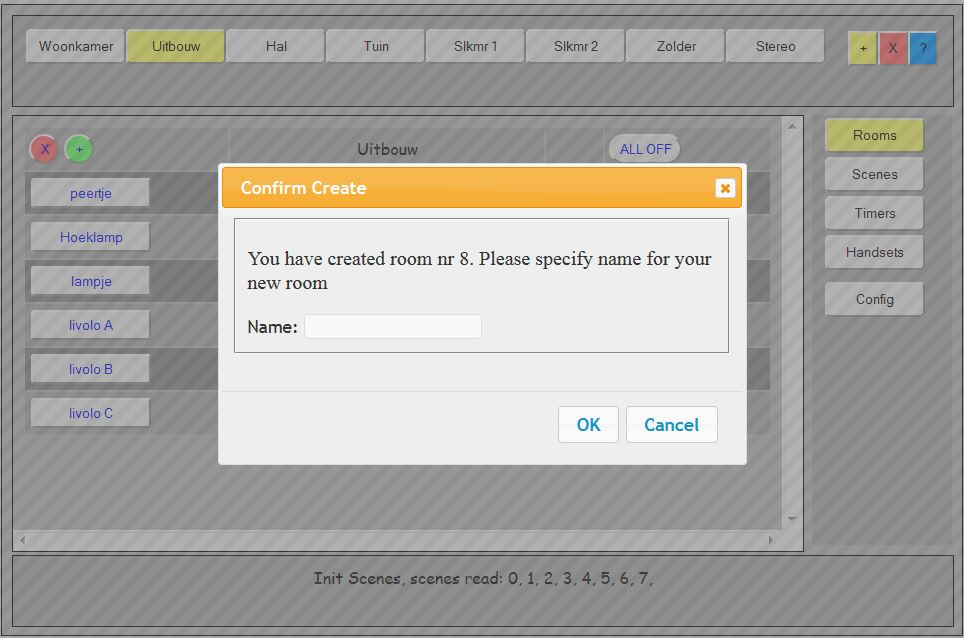

This part of the documentation describes the rooms screen and what you can (and sometimes cannot) do with the rooms screen.
As you see, the GUI interface is designed to operate (and manage) all tasks for the connected devices and minimize the need for manual changing of configuration files etc. let alone making configuration changes at compile time.
In case I missed something, please send me an email or make a note on this page. For the moment I'm the only author of LamPI so it can tak a few days before I answer...
The following actions are defined for the Rooms screen:
This section describes how to add a room to the system. In principle 8 rooms will fit on the top line of the rooms screen without problems, but the maximum is 16, so additional rooms will be put on a second line in the gui_header section.
NOTE: For some reason Internet explorer will not behave well when there are more than 8 rooms defined, however Safari and Firefox do it correctly.

Adding a room consists of a few basisc steps:

This section describes how you can add devices to a room in the rooms screen.